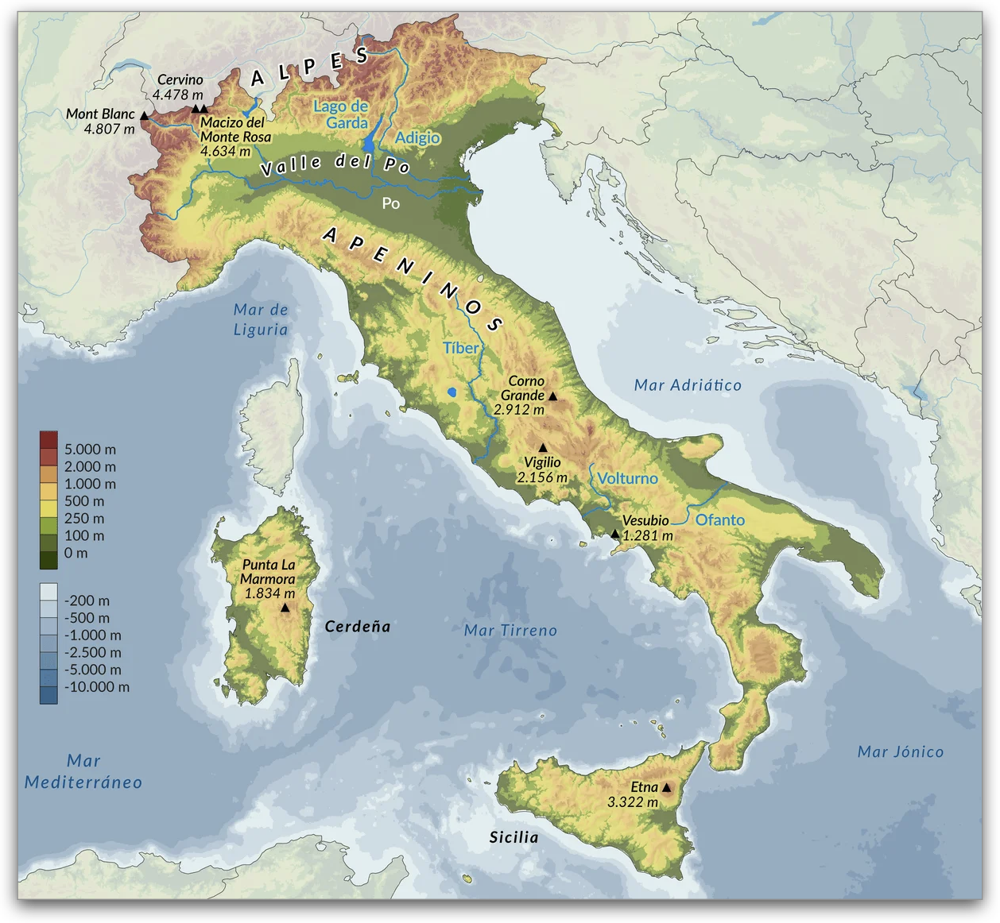

Teoría UD1 · Xeografía clásica¶
1. O Mediterráneo¶
O Mediterráneo é un mar interior que une tres continentes: Europa, Asia e África.
O seu propio nome vén do latín mediterraneus, “no medio das terras”.
- A súa forma alongada e con múltiples illas e golfos favoreceu a navegación de cabotaxe, sempre a pouca distancia da costa.
- A comunicación co Atlántico prodúcese só a través do estreito de Xibraltar, unha auténtica porta estratéxica.
Un mar de civilizacións
Polas súas augas circularon fenicios, gregos, cartaxineses e romanos.
Foi a gran autopista comercial e cultural da Antigüidade, permitindo o intercambio de produtos, ideas e crenzas.
1.1 Clima e ventos¶
O clima mediterráneo caracterízase por invernos suaves e veráns secos e cálidos.
Esta combinación fixo posible a chamada tríade mediterránea: trigo, vide e oliveira.
- Ventos como o etesio (no Exeo) ou o mistral (en occidente) creaban rutas previsibles e seguras para a navegación a vela.
- As correntes internas actuaban como auténticos corredores marítimos.
O Mar Mediterráneo
2. Grecia¶
Mapa interactivo de Grecia
A península grega é un auténtico labirinto de montañas e illas, o que condicionou a súa historia e cultura.
2.1 Relevo¶
O territorio está formado por cadeas montañosas abruptas (Pindo, Olimpo, Taixeto), con vales estreitos e costas recortadas.
- A orografía dificultou as comunicacións por terra, favorecendo a aparición de polis independentes como Atenas, Esparta ou Corinto.
- A multitude de illas e golfos propiciou unha forte vocación mariñeira e comercial.
Influencia do relevo na sociedade
A paisaxe montañosa favoreceu economías de pequena escala (olivar, viñedo, gando) e un espírito político localista.
O mar, en cambio, converteuse nunha vía de unión e de expansión colonial.
3. Italia: unha ponte no Mediterráneo¶
Italia, situada no corazón do Mediterráneo, funciona dende a Antigüidade como cruce de camiños entre Occidente e Oriente e entre o Norte alpino e o Sur africano. O seu litoral abre a tres mares —Tirreno, Xónico e Adriático— e inclúe illas clave como Sicilia e Sardeña, o que explica o seu papel decisivo na historia de Roma.
Mapa das principais da Italia antiga
Como podemos observar, é unha longa península en forma de bota que se proxecta cara ao sur, entre os mares Tirreno e Adriático, fronte ao Xónico.
Portas e corredores estratéxicos
- Estreitos marítimos: Messina (Italia–Sicilia) e Otranto (Adriático–Xónico) conectan rapidamente con Sicilia, Grecia e os Balcáns.
- Pasos alpinos: corredores como Brenner ou os xulios (cara a Noricum/Illyricum) unían Italia co mundo transalpino.
- Portos “porta” de Roma: Ostia/Portus (abastecemento de trigo), Puteoli–Pozzuoli (gran tráfico comercial), Brundisium (saída a Grecia), Rávena e Aquileia (fronte nordeste).
- Grandes vías: Via Appia (Roma–Brundisium), Via Flaminia (Roma–Ariminium/Rímini) e Via Aemilia (Ariminium–Placentia) vertebraban o movemento de exércitos e mercadorías.
💡 A posición central e estes corredores fixeron de Italia un hub comercial, militar e cultural no Mediterráneo.
3.1. Relevo: cordilleiras e chairas¶

O relevo italiano está dominado por dúas grandes cordilleiras:
- Alpes: ao norte, forman un arco protector que illaba de Europa central e fornecía auga (neves e glaciares) aos grandes ríos do norte (Po, Adigio, Ticino…).
- Apeninos: a “columna vertebral” da península, de norte a sur, que divide as vertentes e condiciona as comunicacións, con tramos elevados (Abruzzos) e estreitas chairas costeiras (p.ex. Liguria).
Entre estes macizos ábrense chairas de enorme valor agrícola:
- A chaira padana (Po), un dos principais celeiros do mundo romano.
- As chairas de Campania (arredor de Nápoles), a Campagna Romana (Lacio) e o Tavoliere en Apulia, que completan as áreas fértiles do centro-sur.
Chaves do relevo e do poboamento
- Pasos alpinos e vales fluviais guiaron rutas, vías e fronteiras.
- Chairas fértiles → densidade de poboación e vilas/portos; Apeninos → fragmentación política e máis illamento.
- A proximidade de zonas volcánicas (Campania) explica solos moi fértiles… e riscos que se tratarán máis adiante.
3.2. Hidrografía: ríos vitais¶

Os ríos italianos, a diferenza dos gregos, teñen un curso máis regular e caudaloso, grazas ás choivas e ao desxeo alpino. Isto fixo posible unha agricultura estable e cidades ben abastecidas.
- Po: o máis longo e caudaloso. Nace nos Alpes, percorre a chaira padana e desemboca no mar Adriático, converténdose no auténtico celeiro cerealístico da península.
- Tíber (Tiberis): máis breve, pero clave. Nace nos Apeninos e verte no Tirreno. Nas súas marxes xurdiu Roma, a uns 25 km do mar, nun enclave estratéxico: protexido de incursións piratas, con acceso natural ao interior e preto do porto de Ostia, fundamental para o comercio e o aprovisionamento de trigo.
- Rubicón: río do nordeste italiano, convertido en símbolo histórico cando Xulio César o cruzou no 49 a.C., violando a orde do Senado. Este acto desencadeou a guerra civil e deu lugar á expresión cruzar o Rubicón, hoxe sinónimo de decisión sen volta atrás.
Importancia social e económica
Os ríos foron auténticas arterias vitais para Roma e outras cidades da península:
- 💧 Abastecemento de auga: fornecían auga potable e permitían a construción de acuíferos e acuedutos.
- 🚢 Transporte e comercio: servían de vías de comunicación para mercadorías e persoas.
- 🌾 Agricultura intensiva: aseguraban regadío estable, clave para alimentar unha poboación urbana en constante crecemento.
3.3. Actividade volcánica: o Vesubio¶
Italia é tamén unha terra de volcáns, resultado do choque entre a placa africana e a euroasiática.
O máis célebre é o Vesubio, situado xunto á cidade de Nápoles.
- No ano 79 e.c. entrou en erupción de forma explosiva e sepultou Pompeia e Herculano baixo cinzas e pedra pómez.
- A nube ardente conservou casas, rúas, frescos, alimentos e mesmo moldes dos corpos, o que hoxe permite reconstruír con gran detalle a vida cotiá dunha cidade romana do século I.
- A súa última erupción data de 1944. Dende entón permanece aparentemente en silencio, pero continúa activo e monitorizado, con centos de pequenos sismos anuais e emisións de gas.
Outros volcáns italianos
- Campos Flégreos (Campi Flegrei): enorme caldeira volcánica situada tamén na baía de Nápoles. É un supervolcán que xa provocou erupcións xigantes hai miles de anos (ignimbrita campaniense, toba napolitana) e segue a dar sinais de actividade.
- Etna (Sicilia): un dos volcáns máis activos do mundo, con erupcións case continuas.
- Stromboli (Illas Eolias): coñecido como o faro do Mediterráneo pola súa actividade eruptiva constante.
- O Vesubio é o único volcán do continente europeo que entrou en erupción nos últimos cen anos.
- Os materiais volcánicos, como a toba napolitana, foron empregados polos romanos na construción de edificios, cisternas e portos.
- Os solos formados por cinzas volcánicas son moi fértiles, o que explica a densa poboación arredor de Nápoles malia o risco.